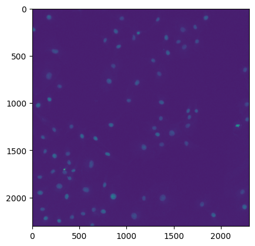
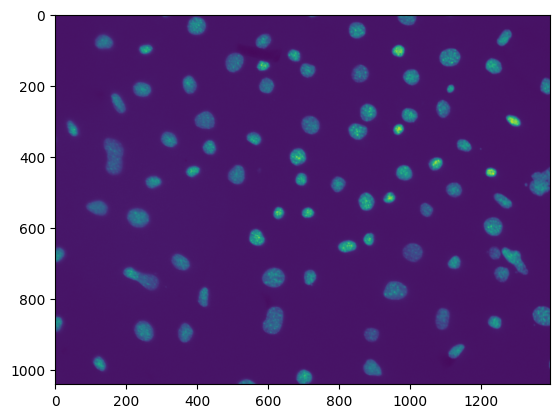
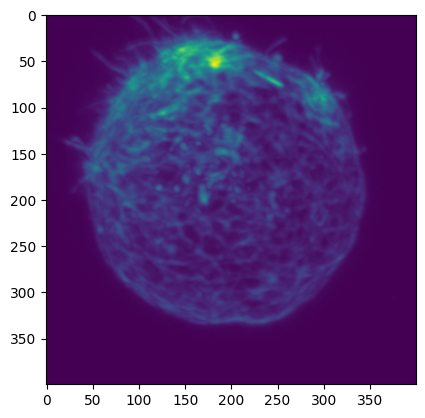
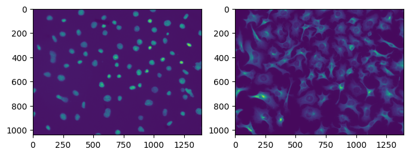

Working with Bioimages in Python#
# /// script
# requires-python = ">=3.12"
# dependencies = [
# "matplotlib",
# "ndv[jupyter,pygfx]",
# "jupyter-rfb<=0.5.4",
# "numpy",
# "tifffile",
# "bffile",
# ]
# ///
Overview#
Welcome to your next step in learning Python!
This notebook is written like a small interactive book to complement the lecture.
This notebook covers the following core building blocks:
Chapter |
Concept |
Why it matters |
|---|---|---|
0 |
Load images with Python |
|
1 |
A data structure for storing and manipulating images |
|
2 |
How to work with multichannel, time series, and z-stack images |
|
3 |
Automate repetitive tasks across many images |
|
4 |
Learn how to visualize more than 1 image at a time |
|
5 |
Load images acquired from commercial acquisition software with Python |
Each chapter has:
Narrative explanation – read this like a textbook.
📓 Examples – run and play.
✍️ Exercises – your turn & guess the output!
In this exercise, we will use the Working with Bioimages Dataset.
0. Reading an Image#
Concept#
To work with an image in Python, we need to specify where the image file is so that we can read, or load, it. Once the image file is read, we can view it and do tasks with it.
Specifying your file’s path#
To read an image file, you need to provide the location, or path of the file. Once you have found your file’s path, you should assign it to a variable to make it easy to work with. Here’s an example:
image_path = r'/Desktop/projects/bobiac/python_bioimages/img.tif'
Adding r in front of the file path tells Python to treat the string exactly as written. Without it, Python can get confused by backslashes \ in a path, leading to a broken path. Adding r avoids this issue, so it’s best practice to always include it when writing a file path.
Caution: Be wary of spaces in folder names, as they sometimes cause terminal to add \ or / to file directories where they should not be. It is best practice to always use _ in folder names whenever you would have wanted to have a space.
Note: Specifying file paths is a common task outside of coding in Python, so some of you may have experience with this already. Note the terminology though. An individual file's location is a path. A folder's path containing an individual or multiple files is called a directory.
Loading an image#
There are many different ways to read image files in Python. In most cases, an appropriate Python library is selected to read an image file based on the image file type. Below is an example of a Python library that can be used to open .tif image files.
Library Name |
Description |
How to import it |
PyPi Link |
Documentation Link |
|---|---|---|---|---|
|
Reads tiff files |
|
In this lesson, we will be working with tiff image files. The Python library tifffile is well-suited to read these files. In order to read an image with tifffile, we will need to import it, and then provide it with the image’s path.
import tifffile as tiff # use an alias to avoid typos! You would put this at the beginning of your code
raw_image = tiff.imread(image_path)
tifffile.imread() will use that image_path you inputted to find your file and read it. It will then return the read file. Since we will be wanting to work with this file, we assign it to the variable raw_image for easy reference.
✍️ Exercise: Use tifffile to read the “2D_image.tif” image and assign it to the variable raw_image.#
import tifffile as tiff
image_path = r"../../_static/images/python4bia/2D_image.tif"
raw_image = tiff.imread(image_path)
Note: In many cases, images you acquire from commercial microscope acquisition software will have proprietary file types (e.g., .nd2 for Nikon NIS Elements, .czi for Zeiss ZEN Blue, etc.). tifffile will fail to read these files because they are not .tif files. At the end of this lesson, we will learn how to use a different Python library to load proprietary file types.
Viewing the image with ndv#
In Python, reading the image and viewing it are two separate actions. Now that we have read the image and assigned it to a variable, we can view it using the library ndv.
Library Name |
Description |
How to import it |
PyPi Link |
Documentation Link |
|---|---|---|---|---|
|
Multi-dimensional image viewer |
|
We can use ndv to view an image as follows:
import ndv
ndv.imshow(image)
ndv.imshow() will use the inputted image variable to display the image in the ndv viewer.
✍️ Exercise: Use ndv to view the image raw_image#
Remember to import ndv!
import ndv
ndv.imshow(raw_image)
Viewing the image with matplotlib#
There are other ways we can view an image in Python. Another common way is to use the pyplot module of a library called matplotlib to plot the image. This way of viewing the image is very different from the ndv viewer, as the resulting image plot is not interactive.
Library Module Name |
Description |
How to import it |
PyPi Link |
Documentation Link |
|---|---|---|---|---|
|
Module within matplotlib library that creates static visualizations |
|
matplotlib contains lots of different functionality, most of which we will not be using in this course. To view an image, we just need to use the pyplot module of matplotlib. We can selectively import this portion of the overall library in two different ways:
from matplotlib import pyplot # option 1
import matplotlib.pyplot # option 2
Option 2 is more commonly used. For typing simplicity, we can use an alias when we import:
import matplotlib.pyplot as plt
To use plt now to plot our image, we write:
plt.imshow(image)
✍️ Exercise: Use matplotlib to view the image raw_image#
Don’t forget to import what you need!
import matplotlib.pyplot as plt
plt.imshow(raw_image)
<matplotlib.image.AxesImage at 0x322921d00>

Viewing an image’s shape#
You can access many helpful image properties using Python, including an image’s shape. For a single 2D image, the image shape refers to rows and columns dimensions of the image in units of pixels. The shape is returned as (rows, columns), which corresponds to (y, x) in a 2D image.

You can access an image’s shape with the following code, where image is the variable assigned to the read image file:
image.shape
Viewing an image’s dtype#
Another image property you can access using Python is an image’s dtype. An image’s dtype will specify the image bit depth, which defines the range of possible intensity values in the image.
You can access an image’s dtype with the following code:
image.dtype
Viewing an image’s type#
In the last notebook, we learned about Python’s standard data types and structures. We used the built-in function type() to check what type of data an object is. We can again apply this type() function to our image to check its type.
Note: Notice the syntax when accessing an image's shape dtype. The syntax is .shape and .dtype instead of .shape() and .dtype(). The parentheses are used when there are required or optional inputs. .shape and .dtype do not have any inputs so they do not have any parentheses.
✍️ Print your image’s shape, dtype, and type#
print(raw_image.shape)
print(raw_image.dtype)
print(type(raw_image))
(2304, 2304)
float32
<class 'numpy.ndarray'>
1. Introduction to NumPy Arrays#
Concept#
A numpy array is an external data structure that is the most common representation of images in Python. Numpy is pronounced “numb-pie” and stands for Numerical Python. A numpy array holds numeric data, one example is images! numpy lets us compute on and manipulate images quickly.
numpy is an external Python library#
Since numpy is an external Python library, you will need to import it to take advantage of numpy array functionality. The entire library contains a wide range of tools, only some of which will be covered in the course.
How a 2D image is organized in a numpy array#
Let’s consider the following simple 2D image:

This 2D image spans two dimensions: it contains 2 rows of pixels and 3 columns of pixels. A numpy array views these two dimensions as two axes, where the first axis is the row dimension (axis 0) and the second axis is the column dimension (axis 1).
Below is how this simple 2D image is represented as a numpy array
numpy.array([[5, 1, 3],
[8, 2, 7]])
How to view an image as a numpy array#
While ndv and matplotlib.pyplot allow us to view an image with the intensity values mapped to color, we can also view an image as a numpy array. We can do this by simply printing the variable name.
📓 Example: Run the cell to view an image as a numpy array#
print(raw_image)
array([[ 0.09020749, -0.00178423, -0.002987 , ..., 0.04493741,
0.01177553, 0.0750894 ],
[-0.02314056, 0.11385718, 0.08430924, ..., 0.0054241 ,
-0.00225509, -0.01320083],
[ 0.04679801, 0.01124081, 0.03206156, ..., -0.00374172,
0.05485659, 0.03596825],
...,
[ 0.08691373, 0.04241789, 0.09509726, ..., 0.01951206,
0.02888004, 0.00815638],
[ 0.07245156, 0.12235244, 0.05044505, ..., 0.08119474,
0.03776044, 0.04849819],
[ 0.06577879, 0.05785591, 0.0173774 , ..., -0.03622082,
0.01617267, 0.03211387]], shape=(2304, 2304), dtype=float32)
numpy array indexing#
We can access elements in a 2D numpy array using indexing, just as we did with the other data structures we learned about. Since we are working with a 2D array, we will have 2 indices to specify, one for each axis.
If we again consider our simple 2D image:
and it’s corresponding numpy array representation:
simple_image = numpy.array([[5, 1, 3],
[8, 2, 7]])
We can index the bottom left element in the array, 8, by specifying it’s index along axis 0 (2nd row), then along axis 1 (1st column):
simple_image[1, 0]
As usual with Python, a numpy array will start indexing for each axis at 0.
Now let’s get some practice with indexing numpy arrays!
✍️ Exercise: Guess the output before running the code!#
# Note: we imported numpy as np
simple_image = np.array([[0, 1, 2],
[3, 4, 5],
[6, 7, 8]])
print(simple_image[2,2])
✍️ Exercise: Guess the output before running the code!#
# Note: we imported numpy as np
simple_image = np.array([[0, 1, 2],
[3, 4, 5],
[6, 7, 8]])
print(simple_image[1,2])
✍️ Exercise: Guess the output before running the code!#
# Note: we imported numpy as np
simple_image = np.array([[0, 1, 2],
[3, 4, 5],
[6, 7, 8]])
print(simple_image[1,0])
✍️ Exercise: Print the intensity value of the pixel in the top left corner of raw_image#

print(raw_image[0, 0])
0.09020749
✍️ Exercise: Print the intensity value of the pixel in the top right corner of raw_image#

# Determine how many total columns are in the image
tot_columns = raw_image.shape[1]
# The last column index is the total number of columns minus 1 (since indexing starts at 0)
last_col_index = tot_columns - 1
# Print the top right corner pixel intensity value
print(raw_image[0, last_col_index])
✍️ Exercise: Print the intensity value of the pixel in the bottom right corner of raw_image#

# Determine how many total rows & columns are in the image
tot_rows = raw_image.shape[0]
tot_columns = raw_image.shape[1]
# The last column index is the total number of columns minus 1 (since indexing starts at 0)
last_row_index = tot_rows - 1
last_col_index = tot_columns - 1
# Print the bottom right corner pixel intensity value
print(raw_image[last_row_index, last_col_index])
Accessing an entire row or column of a numpy array#
We can also access pixels across an entire row or column of a 2D image.
Accessing an entire row#
To access pixels across an entire row, we would specify the target row’s index along axis 0, and then collect all columns across it. In Python, we can specify we want all columns across a row in a few ways:
target_row = 1 # let's grab the second row in the image
image[target_row, :] # use : for the axis 1 index to collect all columns
image[target_row] # not specify a second index at all; if only one index is supplied, it applies to axis 0
Note: If only 1 index is provided for a numpy array, then Python applies that supplied index to axis 0 of the array. This is done regardless of how many dimensions the numpy array has.
Accessing an entire column#
To access pixels across an entire column, we would specify the target column and then collect all rows across it. We can write that in a few different ways as well:
target_column = 3 # let's grab the fourth column in the image
image[:, target_column] # use : for the axis 0 index to collect all rows
Now you give it a try!
✍️ Exercise: Print the first row of pixel values in raw_image#

# option 1
print(raw_image[0, :])
# option 2
print(raw_image[0])
[ 0.09020749 -0.00178423 -0.002987 ... 0.04493741 0.01177553
0.0750894 ]
[ 0.09020749 -0.00178423 -0.002987 ... 0.04493741 0.01177553
0.0750894 ]
✍️ Exercise: Print the first column of pixel values in raw_image#

print(raw_image[:, 0])
✍️ Exercise: Print the middle row of pixel values in raw_image#

# Determine how many total rows are in the image
tot_rows = raw_image.shape[0]
# Determine the middle row index
middle_row_index = tot_rows // 2
# Print the middle row pixel intensity values
print(raw_image[middle_row_index, :]) # option 1
print(raw_image[middle_row_index]) # option 2
How to access pixel statistics from a numpy array#
numpy has functions that enable easy access of common pixel statistics across an entire numpy array, including the minimum, maximum, and mean. In the context of a fluorescence image, accessing these pixel statistics would inform you of the minimum, maximum, and mean intensity value, respectively.
Statistic |
Description |
How to use it |
|---|---|---|
Minimum |
Returns the minimum pixel value in the image |
|
Maximum |
Returns the maximum pixel value in the image |
|
Mean |
Returns the mean pixel value in the image |
|
Now you give it a try! Go ahead and use numpy functionality to access pixel statistics for raw_image.
✍️ Print the minimum, maximum, and mean intensity value of raw_image#
print(raw_image.min()) # Min pixel value
print(raw_image.max()) # Max pixel value
print(raw_image.mean()) # Average pixel value
-0.12493051
1.6892438
0.040033128
Note: Providing no arguments into the () of these functions leads to Python calculating these statistics across the entire ENTIRE numpy array (all axes). As we will learn in the next section, some numpy arrays will contain more than 2 axes, so calculating these statistics across all axes may not be appropriate.
2. Multidimensional Images#
Concept#
So far we have been discussing numpy arrays in the context of individual 2D images. However, numpy arrays can also be applied to multidimensional images. Common examples of multidimensional fluorescence images include z-stacks, time lapses, multiple fluorescence channels, etc. In each of these examples, an additional dimension is created to individual 2D images with x and y dimensions.
How a 3D image set is organized in a numpy array#
Let’s consider the following simple 3D image set containing 4 identical images:

This 3D image set spans 3 dimensions: it contains 4 images, each with 2 rows of pixels and 3 columns of pixels. Just as with individual 2D images, a numpy array views these 3 dimensions as 3 axes, where the first axis is the image dimension (axis 0), the second axis is the row dimension of a given image (axis 1), and the third axis is the column dimension of a given image (axis 2).
Below is how this simple 3D image is represented as a numpy array
numpy.array([[[5, 1, 3],
[8, 2, 7]],
[[5, 1, 3],
[8, 2, 7]],
[[5, 1, 3],
[8, 2, 7]],
[[5, 1, 3],
[8, 2, 7]]])
✍️ Exercise: Print the shape of the “multichannel.tif” image to determine how many fluorescence channels it has#
Don’t forget to read the image!
image_path = r"../../_static/images/python4bia/multichannel.tif"
multichannel = tiff.imread(image_path)
print(multichannel.shape)
(2, 1040, 1392)
How to view a multidimensional image#
The simplest way to view a multidimensional image in Python is to use ndv, just as you did before with the individual 2D image.
✍️ Exercise: Use ndv to view the multichannel image#
ndv.imshow(multichannel)
How to access individual images from a multidimensional image#
We can use indexing to access individual images in a multidimensional image.
What we want to do is specify the target image’s index along axis 0, and then collect all rows and columns across the image. In Python, we can specify we want all rows and columns across the target image in 2 ways:
target_image = 1 # let's grab the second image within the multidimensional image
# option 1
image_set[target_image, :, :] # use : for the axis 1 and 2 indices to collect all rows and columns
# option 2
image_set[target_image] # if only one index is supplied, it applies to axis 0
Now you give it a try!
✍️ Exercise: Use matplotlib to view the first channel of the “multichannel.tif” image file#
target_image = 0 # grab the first image within the multichannel image
channel_1 = multichannel[target_image, :, :] # option 1 for indexing the first channel
channel_1 = multichannel[target_image] # option 2 for indexing the first channel
plt.imshow(channel_1)
<matplotlib.image.AxesImage at 0x17f8ef560>

Image projections#
Z-stacks are a common example of multidimensional images in fluorescence microscopy. Z-stacks contain 2D images collected at different z planes to sample a 3D volume. One way to simplify viewing these 3D images is to collapse the data down to 2D using image projections.
Below are examples of common image projections used in fluorescence microscopy and their corresponding numpy functions. You can refer to this numpy documentation page for more details about the functions.
Type of Projection |
Function |
What it does along an axis |
Example projection ( |
|---|---|---|---|
Maximum Intensity Projection |
|
Takes the maximum value |
|
Minimum Intensity Projection |
|
Takes the minimum value |
|
Sum Projection |
|
Takes the sum |
|
Average Intensity Projection |
|
Takes the arithmetic mean |
|
Standard Deviation Projection |
|
Takes the standard deviation |
|
Variance Projection |
|
Takes the variance |
|
✍️ Exercise: Use matplotlib to display the maximum intensity projection of the “zstack.tif” image file#
Don’t forget to read the image file!
image_path = r"../../_static/images/python4bia/zstack.tif"
z_stack = tiff.imread(image_path)
mip = np.max(z_stack, axis=0)
plt.imshow(mip)
<matplotlib.image.AxesImage at 0x17fa6a6c0>

3. Saving Images#
Concept#
With tifffile, we can also save output files using the function imwrite().
Saving Output Files#
To save files using imwrite(), we must specify two things:
The file path the image will be saved to, which ends with a specified file name
The
data: the image you want to save!
Here’s how we can write the code to save an image output_image:
import tifffile as tiff # this would be at the beginning of the code, and only specified once
output_path = "/Users/edelase/bobiac/results/output_image.tif" # full file path including the file name we want to save
tiff.imwrite(output_path, data=output_image)
Here, tiff.imwrite is provided with 2 required inputs:
output_pathis the file path the image will be saved to, which ends with a specified file namedata=output_imageis a specification for the image data being saved
tiff.imwrite() will use these two inputs to output a tiff file of output_image saved to the folder specified in output_path.
✍️ Exercise: Save the maximum intensity projection of the z-stack using tifffile#
output_path = "path/to/output/directory/mip.tif"
tiff.imwrite(output_path, data=mip)
4. Visualizing Multiple Images#
Concept#
So far we have been using ndv to view multidimensional images. We can also use matplotlib.pyplot, but doing so would involve plotting multiple images. One way we can do this is by organizing each image as a subplot within an overall figure.
How a figure can be organized with matplotlib.pyplot#

Creating a figure#
Using matplotlib.pyplot, we can create a 8 inch x 6 inch figure by writing the following:
import matplotlib.pyplot as plt
# Create a figure
plt.figure(figsize=(8, 6))
Filling the figure with subplots, each containing images#
The code above creates an empty figure. We will now need to fill it with subplots containing images. We can use the subplot() function to create a subplots organized in a total number of rows and columns, and select a specific spot to put an image into:
plt.subplot(tot_rows, tot_columns, specific_spot)
To fill the figure with 2 subplots organized next to each other, we would want to have 1 row and 2 columns. We would therefore write the following:
# Select the first spot and plot an image into it
plt.subplot(1, 2, 1) # (1 row, 2 columns, first spot)
plt.imshow(img_1)
# Select the second spot and plot an image into it
plt.subplot(1, 2, 2) # (1 row, 2 columns, second spot)
plt.imshow(img_2)
Displaying the final figure#
Once you have added the images to the figure, you can display it with the following:
# Show the plot
plt.show()
Caution: Using matplotlib.pyplot.subplot() is not the only way that you can plot multiple images in a figure with matplotlib.pyplot. Ironically, another common way to plot multiple images in a figure is with matplotlib.pyplot.subplots(). While both accomplish the same final result, the second option uses a different indexing system to add items to each subplot.
✍️ Exercise: Use matplotlib to display each channel of the “multichannel.tif” image file, side by side#
# read the multichannel image
image_path = r"../../_static/images/python4bia/multichannel.tif"
multichannel = tiff.imread(image_path)
# check the shape of the multichannel image
print(multichannel.shape) # we see that it's a 2 channel image with dimensions 1392x1040 px
# create a figure with 2 subplots, one for each channel
plt.figure(figsize=(8, 6)) # 8 inches wide, 6 inches tall
# channel 1 in the first subplot position
plt.subplot(1, 2, 1) # 1 row, 2 columns, first subplot
plt.imshow(multichannel[0]) # channel 1 in the first subplot
# channel 2 in the second subplot position
plt.subplot(1, 2, 2) # 1 row, 2 columns, second subplot
plt.imshow(multichannel[1]) # channel 2 in the second subplot
# show the plot
plt.show()
(2, 1040, 1392)

Figure Aesthetics#
matplotlib.pyplot has additional settings you can use to edit the look of these figures. Below are a few key examples of aspects you can edit, although many more options can be found in the documentation.
Removing axis labels#
If you do not want to display the axis number labels on the sides of images, you can turn them off by writing plt.axis("off") for each subplot after plotting the image:
# Create a figure
plt.figure(figsize=(8, 6))
# First subplot
plt.subplot(1, 2, 1)
plt.imshow(img_1)
plt.axis("off") # Turn off axis labels
# Second subplot
plt.subplot(1, 2, 2)
plt.imshow(img_2)
plt.axis("off") # Turn off axis labels
Changing the lookup table (LUT)#
You can change the LUT of the image display by specifying a colormap for each subplot. Color map options can be found in this documentation page. If the colormap is not specified, matplotlib.pyplot defaults to using the viridis colormap.
You can specify the colormap cmap for a subplot by including it when you plot the image
plt.subplot(1, 2, 1)
plt.imshow(img_1, cmap="gray") # will use the gray colormap to plot img_1
Adjusting image brightness & contrast#
You can also change the color mapping of the image to its minimum and maximum intensity values, rather than to the minimum and maximum of the image bit depth. Doing so will help you view features in the image more clearly.
You can specify the minimum vmin and maximum vmax value of the color mapping by including it when you plot the image:
plt.subplot(1, 2, 1)
plt.imshow(img_1, cmap="gray", vmin=img_1.min(), vmax=img_1.max()) # adjust to the min and max of img_1
Fitting the subplots in the figure#
When you create a figure with subplots, you specify the figure size but not individual subplot sizes. If the figure size is too small to fit individual subplots, you can run into situations where the axis labels, among other things for each image, will overlap. matplotlib.pyplot has a layout setting called constrained layout, which you can use to fit plots within your figure cleanly. Constrained layout automatically adjusts subplots so that decorations like tick labels do not overlap.
You can specify you want to use constrained layout by specifying it when you define the figure:
plt.figure(figsize=(8, 6), layout="constrained") # use constrained layout
✍️ Exercise: Edit your “multichannel.tif” plot above to display each image with a different colormap, adjusted to the min and max of the image. Hide the axis labels, and use constrained layout.#
# create a figure with 2 subplots, one for each channel
plt.figure(figsize=(8, 6), layout="constrained") # 8 inches wide, 6 inches tall
# channel 1 in the first subplot position
plt.subplot(1, 2, 1) # 1 row, 2 columns, first subplot
plt.imshow(multichannel[0], cmap="green", vmin=multichannel[0].min(), vmax=multichannel[0].max())
plt.axis("off") # turn off axes labels for the first subplot
# channel 2 in the second subplot position
plt.subplot(1, 2, 2) # 1 row, 2 columns, second subplot
plt.imshow(multichannel[1], cmap="magenta", vmin=multichannel[1].min(), vmax=multichannel[1].max())
plt.axis("off") # turn off axes labels for the second subplot
# show the plot
plt.show()
Visualizing multiple images with ndv#
ndv also has display options we can set. We can specify the LUT for each channel and view the composite, or overlayed image of channels.
Viewing the composite image#
We can view the composite image of a multichannel image file by specifying the channel_mode:
ndv.imshow(image, channel_mode="composite")
Specifying channel LUTs#
We can also specify each channel’s LUT by referring to the channel’s index:
ndv.imshow(image,
channel_mode="composite",
luts = {0:{"cmap":"green"}, 1: {"cmap": "magenta"}}
)
5. BONUS: Reading Proprietary File Types#
Concept#
In many cases, images you acquire from commercial microscope acquisition software will have proprietary file types (e.g., .nd2 for Nikon NIS Elements, .czi for Zeiss ZEN Blue, etc.). tifffile will fail to read these files because they are not tiff files. Instead, you can use the Python library bffile to read these file types.
Library Name |
Description |
How to import it |
PyPi Link |
Documentation Link |
|---|---|---|---|---|
|
Reads and stores a wide variety of commercial file formats (e.g., .nd2, .czi, .lif, etc.) as np.arrays |
|
In order to read an image with bffile, we will need to import it, and then provide it with the image’s path.
import bffile
image_path = r"path/to/file"
image = bffile.imread(image_path)
bffile.imread() will use that image_path you inputted to find your file and read it. It will then return the read file.
✍️ Exercise: Use bffile to read the “2D_image.nd2” image and assign it to the variable nd2_image. Then, print its shape.#
Don’t forget to import bffile!
import bffile
image_path = r"../../_static/images/python4bia/2D_image.nd2"
nd2_image = bffile.imread(image_path)
print(nd2_image.shape)
(1, 1, 1, 2044, 2048)
How bffile organizes an image’s numpy array#
When bffile.imread() reads an image, it always organizes the image as a numpy array with a shape (T, C, Z, Y, X), where:
T = Time Point Images
C = Channel Images
Z = z Slice Images
Y = Rows in an Image
X = Columns in an Image
If the image does not have time points, channels, or z slices, the length of that axis will be 1. Consider again our simple 2D image. If we use bffile.imread() to load this image, its numpy array will be organized as a 5D array.

Using numpy.squeeze() to drop unnecessary axes#
At times, it can be clunky to carry around those extra dimensions if they are not relevant to the given image. We can use numpy.squeeze() to get rid of specific axes that have a length of 1.
Library Module Name |
Description |
How to use it |
Documentation Link |
|---|---|---|---|
|
Remove axes of length one from a |
|
To use numpy.squeeze(), we provide the numpy array. We can also provide a specific axis number to drop. If no axis is provided, numpy.squeeze() will drop any axes with length 1. Here’s an example:
numpy.squeeze(image, axis = 0) # drop only the first axis from the numpy array image
numpy.squeeze(image) # drop any axes with length 1 from the numpy array image
Note: numpy.squeeze() will raise an error if an axis is selected with shape entry greater than one.
✍️ Exercise: Drop unnecessary axes from nd2_image. Print its shape to confirm the change.#
Note: Remember that we imported numpy with the alias np
# check image shape
print(nd2_image.shape) # we see T, C, Z are all 1 and can be dropped
# Option 1: Drop T, C, and Z axes all at once
nd2_image_nTCZ = np.squeeze(nd2_image)
print(nd2_image_nTCZ.shape) # we now have (2044, 2048)
# Option 2: Drop T, C, and Z axes one at a time
# drop T axis
nd2_image_nT = np.squeeze(nd2_image, axis=0)
print(nd2_image_nT.shape) # we now have (1, 1, 2044, 2048)
# drop C axis
nd2_image_nC = np.squeeze(nd2_image_nT, axis=0)
print(nd2_image_nC.shape) # we now have (1, 2044, 2048)
# drop Z axis
nd2_image_nZ = np.squeeze(nd2_image_nC, axis=0)
print(nd2_image_nZ.shape) # we now have (2044, 2048)
(1, 1, 1, 2044, 2048)
(2044, 2048)
(1, 1, 2044, 2048)
(1, 2044, 2048)
(2044, 2048)
Next Steps#
Congratulations for making it to the end of this lesson! You have now started learning how to work with images in Python! However, just as with syntax, there is always more to learn when it comes to mastering a programming language and mindset. Below is another resource we recommend to review concepts and build upon your new-found knowledge.
1. BoBiAC Exercises: Working with Bioimages
2. Reviewing Images & Pixels with Python: Pete Bankhead’s Introduction to Bioimage Analysis Book is a self-paced beginner resource that covers many of the core topics introduced in this lesson within the “Introducing Images” section.